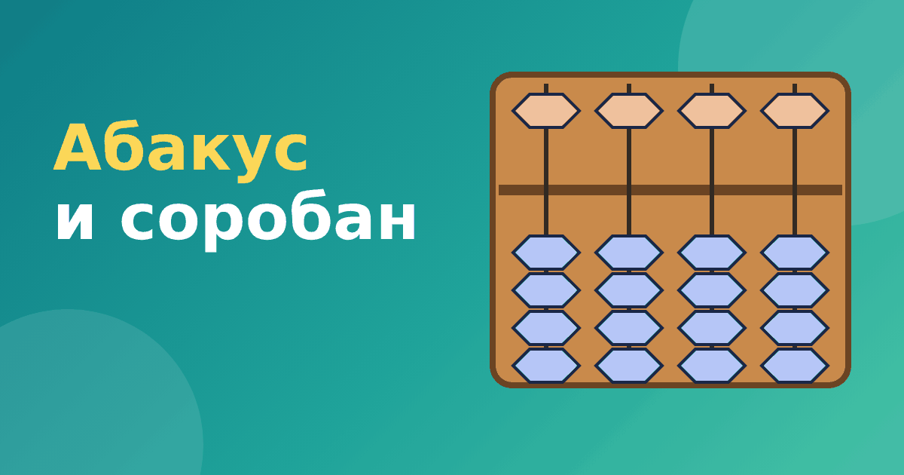

Абакус (соробан): устройство японских счётов для детей

Абакус — слово, которое сегодня знают почти все родители, чьи дети интересуются счётом. Но мало кто понимает, как именно он устроен и чем отличается от привычных деревянных счётов из школьной «дореформенной» классной комнаты. В этой статье подробно разберём абакус для детей: из чего он состоит, как читать число и почему его называют соробаном.
Абакус и соробан: в чём разница слов
Слово «абакус» — общее название счётной доски с подвижными элементами. Так называли и древнеримские счётные доски, и более поздние устройства. Когда в курсах ментальной арифметики говорят «абакус», обычно имеют в виду конкретный вид счёт: японский соробан. Поэтому в большинстве статей и рекламных материалов эти два слова считаются синонимами.
Соробан появился в Японии на основе китайских счётов суаньпань. На суаньпане над перекладиной две бусины, а под ней пять. Японские мастера постепенно убрали лишнее: оставили одну верхнюю и четыре нижних. Этого достаточно, чтобы показать любую цифру от 0 до 9, а считать становится удобнее. В современном виде соробан закрепился в XX веке.
Чем соробан отличается от русских счётов
Привычные русские счёты имеют десять косточек на каждой спице и работают по принципу «десять в одной проволоке». Соробан устроен иначе.
- На каждом стержне всего пять бусин, а не десять.
- Верхняя бусина стоит как 5, нижние — по 1. Поэтому стержень показывает цифру от 0 до 9.
- Бусины считаются только возле перекладины. Отодвинутые бусины не учитываются.
- Каждый стержень — это отдельный разряд числа: единицы, десятки, сотни.
Из-за такого устройства абакус хорошо подходит для десятичной системы, и числа на нём читаются как цифры в записи: сколько на стержне, такая и цифра.
Как читать число на абакусе
Читать число нужно слева направо, как обычно. Самый левый используемый стержень — старший разряд, самый правый — единицы. Для каждого стержня считаем: если верхняя бусина прижата к перекладине, добавляем 5, и прибавляем по 1 за каждую прижатую нижнюю бусину.
Пример. На трёх стержнях видим: на первом верхняя бусина прижата и одна нижняя (это 6), на втором ничего не прижато (0), на третьем прижаты три нижние (3). Получаем число 603.
Ещё пример: на двух стержнях видим четыре нижних бусины на первом и верхнюю с двумя нижними на втором. Это 4 и 7, то есть число 47.
Как держать пальцы
На настоящем абакусе нижние бусины двигают большим пальцем, а верхнюю — указательным. Это не прихоть: так руке удобнее, а скорость растёт. Кроме того, в этом есть смысл для дальнейшего мысленного счёта: в воображении ребёнок «двигает» пальцами те же бусины. Позже мы расскажем об этом подробнее в статье как работает ментальный счёт.
В виртуальном абакусе нашего тренажёра бусины двигаются нажатием на экран, поэтому правильная постановка пальцев там не нужна. Но если вы планируете заниматься и на настоящих счётах, лучше сразу показать ребёнку правильный хват.
Какие абакусы бывают
Для начинающих чаще всего покупают соробан с 13 или 17 стержнями: этого хватает с большим запасом. Обратите внимание на несколько вещей.
- Бусины должны двигаться плавно, но не болтаться.
- Перекладина должна быть чётко отделена от рамки.
- Для занятий дома удобно иметь счёты размером с тетрадь, а не огромные демонстрационные.
Если вы не уверены, нужны ли настоящие счёты, начните с виртуального. В бесплатном модуле тренажёра «Ментальная арифметика» можно познакомиться с устройством абакуса и набрать первые числа, а потом решить, покупать ли физический.
Почему абакус для детей удобен
Главное достоинство абакуса для детей в том, что число становится видимым и осязаемым. Ребёнок не просто повторяет «пять плюс три», а двигает бусины и видит, как меняется число. Для многих детей, особенно визуалов, это лучше работает, чем запись в тетради. Японские счёты хорошо подходят и для первого знакомства с разрядами: стержни слева направо наглядно показывают, что десяток старше единицы, а сотня старше десятка. Если ребёнок путает разряды в школе, несколько занятий на абакусе иногда помогают разложить всё по полочкам.
Ещё один плюс — понятная проверка. Ответ всегда читается прямо на счётах, и ребёнок сам видит, получилось ли нужное число. Поэтому абакус хорошо подходит для самостоятельной работы под присмотром взрослого.
Что дальше
Когда ребёнок уверенно читает числа на абакусе, можно переходить к сложению и вычитанию. Об этом наши статьи сложение на абакусе и вычитание на абакусе. Если вы только выбираете метод, посмотрите общий обзор — что такое ментальная арифметика.